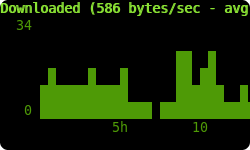
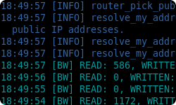
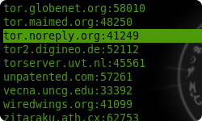
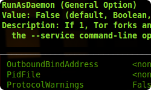
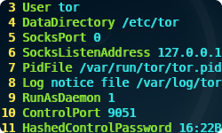
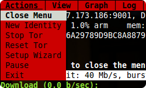

Welcome to Nyx
Nyx is a command-line monitor for Tor. With this you can get detailed real-time information about your relay such as bandwidth usage, connections, logs, and much more.
Nyx's latest version is 2.0.4, released November 5th, 2017. Prior this application went under the name of 'arm'. Sorry for the confusion!
What does Nyx provide?

«Bandwidth Graph
Bandwidth used by Tor. You can press 'i' to pick the graphing interval, or 's' to show other usage statistics.

«Event Log
Tor logs a wealth of information about itself. We present it, colorized and deduplicated. Press 'e' to select what events are logged and 'f' to filter to just what you want.

«Connections
Connection data similar to netstat or lsof, but correlated with Tor relay information to make it much richer. Press 'enter' for more details, 's' to sort, and 'd' to see raw descriptor data.

«Configuration Editor
Editor to change Tor's setting on the fly, with usage information from its manual. Press 'enter' to change Tor settings and 'w' to write your changes to disk.

«Torrc
Provides your torrc with line numbers and syntax highlighting. Comments can be stripped by pressing 's'.

«... and more!
That's just the tip of the iceberg. All pages within Nyx provide help information when you press 'h' and menu in response to 'm'. So go explore!
Download
Nyx is available Mac OSX, Linux, and BSD but not Windows. Find your platform below to get started. For what's changed see our change log.
Configuration
Like many terminal applications Nyx can be customized through a configuration file. By default ~/.nyx/nyxrc, though you can specify one with nyx --config /path/to/nyxrc.
Configurations are a simple series of key/value pairs. See Stem for details. For example...
acs_support false
color_override blue # make our UI predominately blue
logged_events BW, NOTICE, WARN, ERR
General Options
| Option |
Default |
Description |
| data_directory |
~/.nyx |
Location data is cached to. To avoid caching anything to disk specify 'data_directory disabled'. |
| tor_chroot |
|
Chroot jail tor resides within. Most common on FreeBSD, if tor is running within a jail then use this to specify the path prefix we should use when looking for tor files on disk. |
| show_bits |
false |
Shows bandwidth measurements in bits if true, and bytes if false. |
| confirm_quit |
true |
Asks the user to confirm when pressing 'q' to quit if true. |
| color_interface |
true |
Uses colors in Nyx's interface if true. Monochrome is false. |
| color_override |
|
Replaces most color with this hue. Options available are red, green, blue, cyan, magenta, yellow, and black. |
| unicode_support |
true |
Render text as unicode if true. Only ASCII is rendered if false. |
| acs_support |
true |
Uses ACS (alternate character set) for nice borders if true. Borders are replaced with ASCII pipe characters if false. |
Update Rates
| Option |
Default |
Description |
| redraw_rate |
5 |
Seconds to await user input before redrawing. |
| connection_rate |
5 |
Seconds between querying connections. |
| resource_rate |
5 |
Seconds between querying process resource usage. |
| port_usage_rate |
5 |
Seconds between querying processes using ports. |
Logging
| Option |
Default |
Description |
| logged_events |
NOTICE,
WARN,
ERR,
NYX_NOTICE,
NYX_WARNING,
NYX_ERROR |
Comma separated list of events to be initially logged, similar to the --log argument. |
| deduplicate_log |
true |
Hides duplicate log messages. |
| prepopulate_log |
true |
Populates with events that occure before we started. |
| logging_filter |
|
Regex filter for log messages that are shown. |
| write_logs_to |
|
Writes logs that occure as we run to this path. |
| max_log_size |
1000 |
Maximum number of log messages. |
Graphing
| Option |
Default |
Description |
| graph_stat |
bandwidth |
Statistic to be graphed. Options are...
- none - hide the graph
- bandwidth - downloaded/uploaded
- connections - inbound/outbound connections
- resources - cpu/memory usage
|
| graph_interval |
each second |
Graph sampling interval. Options are...
- each second
- 5 seconds
- 30 seconds
- minutely
- 15 minute
- 30 minute
- hourly
- daily
|
| graph_bound |
max_local |
Bounding for the graph min and max. Options are...
- global_max - global maximum
- local_max - local maximum
- tight - local maximum/minimum
|
| graph_height |
7 |
Height of the graph. |
| max_graph_width |
300 |
Maximum number of samplings. |
Tor Configuration
| Option |
Default |
Description |
| config_order |
MAN_PAGE_ENTRY,
NAME,
IS_SET |
Order for tor config options. Options are...
- NAME
- VALUE
- VALUE_TYPE
- CATEGORY
- USAGE
- SUMMARY
- DESCRIPTION
- MAN_PAGE_ENTRY
- IS_SET
|
| show_private_options |
false |
Shows configurations with a '__option' prefix. |
| show_virtual_options |
false |
Shows unsettable tor configurations. |
Connections
| Option |
Default |
Description |
| connection_order |
CATEGORY,
IP_ADDRESS,
UPTIME |
Order for connections. Options are...
- CATEGORY
- UPTIME
- IP_ADDRESS
- PORT
- FINGERPRINT
- NICKNAME
- COUNTRY
|
| resolve_processes |
true |
Shows processes for SOCKS and CONTROL connections. |
| show_addresses |
true |
Shows addresses of connections. |
Compenent Visability
| Option |
Default |
Description |
| show_graph |
true |
Shows the graph. |
| show_accounting |
true |
Shows accounting stats if AccountingMax is set. |
| show_log |
true |
Shows the event log. |
| show_connections |
true |
Shows connection information. |
| show_config |
true |
Shows tor's configuration. |
| show_torrc |
true |
Shows the torrc. |
| show_interpreter |
true |
Shows the control interpreter. |
 Mac OSX
Mac OSX


{kind=link}
{kind=link}
{kind=link}
{kind=link}
{kind=link}
{kind=link}
{kind=link}